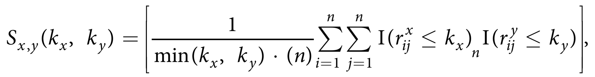
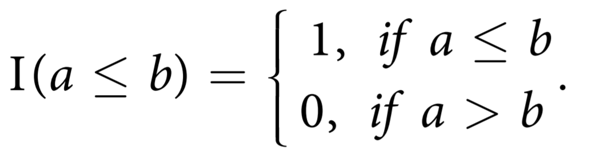

Methodology
Introduction
KNRscore provides a quantitative framework for comparing different dimensionality reduction techniques by analyzing their ability to preserve local neighborhood structures. This is particularly important when choosing between different visualization methods or when evaluating the quality of embeddings.
The Scale-Dependent Similarity Measure
The core of KNRscore is a scale-dependent similarity measure that compares two different embeddings (maps) by analyzing their local neighborhood structures. For any pair of maps X and Y, we compare the sets of kx and ky nearest neighbors for each sample.
Mathematical Formulation
Let’s define the key components of our similarity measure:
Rank Variables: - Let \(r_{x_{ij}}\) be the rank of the distance of sample j among all samples with respect to sample i in map X - Let \(r_{y_{ij}}\) be the rank of sample j with respect to sample i in map Y
Similarity Score: The similarity score \(s_{x,y}(k_x, k_y)\) is defined on the interval [0, 1] as:
where: - n is the total number of samples - The indicator function is given by:

{kind=link}
{kind=link}
Interpretation
A score of 1 indicates perfect agreement: all kx nearest neighbors in map X are also the ky nearest neighbors in map Y (or vice versa)
A score of 0 indicates complete disagreement in neighborhood structures
Intermediate scores indicate partial agreement in local structures
Parameter Selection
The neighborhood size (k) can be chosen based on: - Minimum class size in the dataset - Average class size - Specific analysis requirements - Domain knowledge about the expected cluster sizes
Schematic Overview
The KNRscore methodology can be broken down into four main steps:
Input Maps - Two different embeddings (X and Y) of the same n samples - Each map represents the data in a different reduced-dimensional space
Distance Ranking - Compute Euclidean distances between all samples in each map - Rank samples based on their distances for each reference point
Neighborhood Comparison - Compare the ranks of samples between maps X and Y - Analyze the overlap between kx and ky nearest neighbors
Score Computation - Calculate the similarity score Sx,y(kx,ky) - Aggregate results across all samples
{kind=link}
Applications
KNRscore is particularly useful for:
Method Comparison - Compare different dimensionality reduction techniques - Evaluate the impact of parameter choices - Select the most appropriate method for a given dataset
Quality Assessment - Quantify the preservation of local structures - Identify potential distortions in embeddings - Validate the reliability of visualizations
Parameter Optimization - Find optimal neighborhood sizes - Tune dimensionality reduction parameters - Balance local vs. global structure preservation